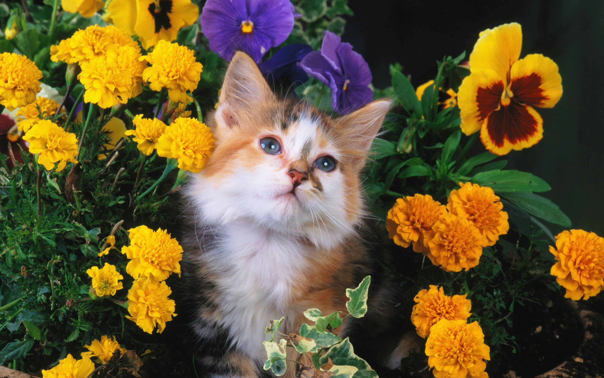

Абиссинская кошка Одна из самых древних пород кошек, появившаяся в Африке. Кошка выглядит, как египетская статуэтка в бархатной рыжей накидке. Сочетание дикой красоты, ума и игривости обязательно привлечет ваше внимание.
Австралийский мист (Австралийская дымчатая) Пятнистый или мраморный дымчатый окрас в сочетании с выразительными глазами – вот результат кропотливого скрещивания абиссинской и бурманской пород.
Американская жесткошерстная Мутация подарила американской жесткошерстной кошке упругую пружинистую шерсть, довольно грубой на ощупь. Спокойный характер, охотничьи инстинкты и любовь кошки к детям прекрасно подойдут для большой семьи.
